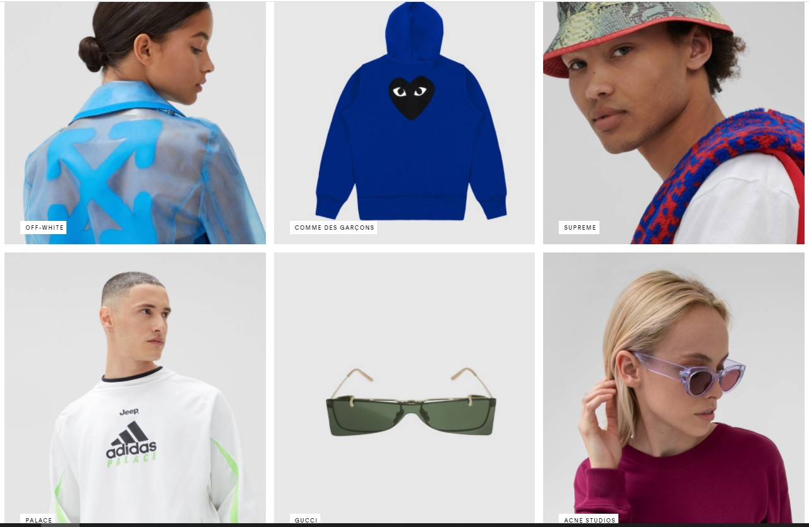
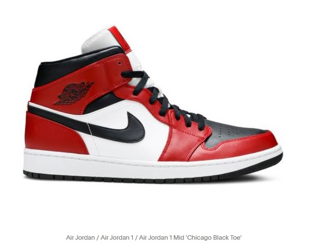
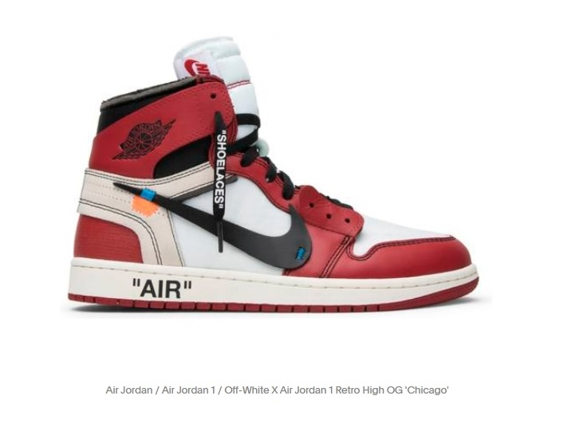

Our services:
SHOP GLOBAL BRANDS: Explore over a million listings from emerging, contemporary and luxury brands including Nike, Air Jordan, Adidas, Yeezy, Off-White, Comme des Garcons, Supreme, Gucci and more.
SAVE WANTS,PLACE OFFERS: Find the right product at the right price. Manage your most-wanted styles, get alerts and place offers.
GET INSPIRED: Shop street style looks, try on sneakers in AR and read Greatest,our magazine featuring stories of emerging artists and industry veterans who pave the way in fashion, art, music, design, enterpreneurship and beyond.
REST ASSURED: All sellers, retailers and boutiques are vetted, and all products are verified by hand to ensure they are authentic and as described.
Different brands that you can choose to shop accordingly:
- Off-White: Founded in 2012 Virgil Abloh has described Off-White as "the grey area between black and white” and the brand aims to bridge the gap between streetwear and luxury. The brand is most known for its stylized use of quotation marks and bold arrows graphic, while showing off Abloh’s Dada design influence.
- Comme des Garçons: Japanese fashion label COMME des GARÇONS was founded by Rei Kawakubo and has a unique style that is all their own. Delving into the realm of sneaker collaborations, each shoe is distinct and vibrant.
- Supreme: Founded in 1994 by James Jebbia, Supreme is considered the most influential voice in streetwear. The New York skate brand is known for elevating subcultures through collaborative and subversive methods, working with everyone from Nike and COMME des GARCONS to Larry Clark and Jeff Koons.
- Palace: Founded in 2009 by Lev Tanju, Palace is recognized as the UK’s answer to Supreme. Known for nonsensical product descriptions and provocative logo flips, the London label has collaborated with prestigious European sporting institutions including English tennis tournament Wimbledon and Italian soccer club Juventus F.C., redefining what a skate brand is capable of.
- Acne Studios: Acne Studios dedicates an entire collection to its face motif for FW20. Across apparel and sneakers, the offerings experiment with playful interpretations of the label’s recurring design. The power of two circles and a rectangle.
Comparison of some shoes:
The Air Jordan 1 Mid ‘Chicago Black Toe’
The Air Jordan 1 Mid ‘Chicago Black Toe’ draws inspiration from the sneaker’s 1985 roots. The distinctive color blocking is reminiscent of the OG ‘Chicago’ colorway, applied to a mid-top silhouette and revised with a black finish on the perforated toe box. Jumpman branding adorns the woven tag stitched onto the padded white nylon tongue, while a classic Jordan Wings logo is stamped in black on the lateral collar flap.
Off-White x Air Jordan 1 Retro High OG 'Chicago'
Created by designer Virgil Abloh, the Air Jordan 1 x Off-White comes in the classic Chicago colorway. Some of the sneakers' half-finished features include a Swoosh connected to the shoe with visible blue stitching, 'Air' printed on the midsole, and an Off-White zip tie on the collar. The box comes deconstructed as it's been turned inside-out with the inside consisting of a black base and gold Jumpman logo, while the outside is plain cardboard with the words 'Jumpman' printed on it. Virgil's Off-White collection included remixed iterations of the Air VaporMax, Air Presto, Air Max 90, Blazer, Air Max 97, Hyperdunk 2017, Air Force 1, Zoom Fly, and Chuck Taylor.
An exclusive first look at the Dior x Air Jordan 1. Discover it in AR now, only on the app:
This videos shows an exclusive first look at the Dior x Air Jordan 1. This shoe can be tried in AR now, only on the app, which have already got attention of all the sneaker heads all over the world.
Download the GOAT App:
For IOS: AppStore-GOAT
For Android: GooglePlay-GOAT
App features:
- Shop sneakers, apparel and accessories.
- Manage your most-wanted styles.
- Get notifications on price drops.
- Discover exclusive collections
- Try-on coveted sneaker styles with AR.
- Make an offer, pay what you want.